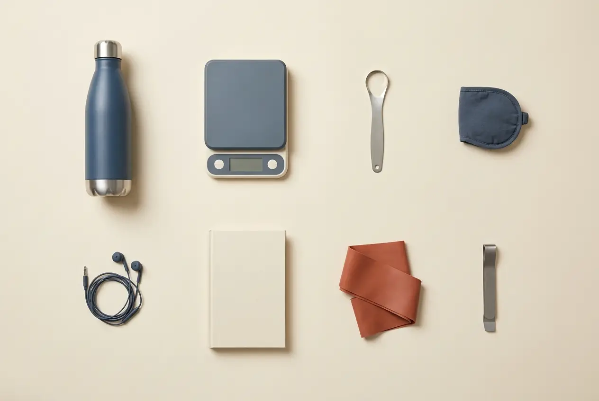

The essentials
This site is general information from research and my own experience, not medical advice and not from a licensed health professional; check with your doctor before acting on it.
What I own and why. Buy once, not over and over. Stainless, glass, cast iron and wood against food; never heat food in plastic. Evidence over hype. No subscriptions, no status items, one big appliance at a time.
Each category shows the best value and, where one exists, the best to have. The items I own are marked; the ones still on my list are marked too, so you know which reviews are mine and which are borrowed. No prices are typed here on purpose: the link shows the current one.
As an Amazon Associate I earn from qualifying purchases.

I own this means it is in my house and in use. On my list means I have read the tests and chosen it, but not bought it yet.
Kitchen
I cook from whole ingredients, so the kitchen is the biggest group. The rule for anything that touches food: stainless, cast iron, enamel, glass or wood. No non-stick, no plastic that gets heated.
As an Amazon Associate I earn from qualifying purchases. It costs you nothing extra.
Kitchen scale, 1 g
Every scale that wins a shootout reads to one gram, so replacing a working one is a sideways move.
- Best valueMy Weigh KD-8000 I own this
Same 1 g accuracy as the shootout winners. It weighs every meal I eat.
Pocket scale, 0.1 g
No cheap scale does 8 kg and 0.1 g, so the answer is a second, small scale. The listing must show 0.1 g readability, 300 to 500 g capacity, a tare button and a calibration weight. Cheap pocket scales drift; check monthly.
- Best valueKitchenTour EG-5001 On my list
For the 0.5 g of yeast or xanthan a recipe needs. Fallback: Smart Weigh SWS1KG.
Cast-iron skillet
Cast iron or stainless against food. No non-stick coatings and no titanium non-stick either.
- Best valueLodge Chef Collection 12-inch skillet On my list
Next on my list.
Stainless skillet and core pots
One stainless skillet, a 2-quart saucepan, a 4-to-6-quart pot and an 8-quart stock pot cover everything I cook.
- Best value12-inch stainless skillet I own this
The one I reach for daily; the brand of mine is not worth repeating, any good stainless skillet does the job.
Dutch oven
Enameled cast iron, about 7 quarts, with a lid and knob that take 475 °F for bread. The status brand is not the requirement.
- Best valueEnameled cast-iron Dutch oven, 7 quart On my list
Braises, soups, bread, batch cooking for three. - Best to haveStaub 7-quart round cocotte On my list
Only on sale, never at full price.
Glass food storage
Glass for the fridge and reheating, stainless for carrying. Never heat food in plastic; reheat with the lid off. Count what the house has and buy only the shortfall.
- Best valueKICHLY glass containers, 9-pack On my list
I have not checked the box size against the 1.1 to 1.2 L I want. - Best to haveOXO Smart Seal glass containers On my list
Cutting board
Wood only. No plastic, TPU, composite, glass or bamboo. Raw meat gets its own smaller hardwood board; wash hot, dry standing.
- Best valueTeakhaus cutting board On my list
I already own a big hardwood board; this would be the second, smaller one for raw meat.
Knife sharpening
Do not buy a knife, a knife block or a set. The edge, not the knife, is the variable. Sharpen about every three months; check the edge first.
- Best valueCWOVRS diamond sharpening plates, 240 to 2000 I own this
All three of my knives were blunt until these. Bought once. - Best to haveShapton splash-and-go stone On my list
I did not need it once I had the plates.
Instant-read thermometer
Three cooks I trust name an instant-read. One is enough.
- Best valueThermoWorks ThermoPop 2 I own this
Best-value instant-read; I check every piece of meat with it.
Food processor
No plastic-free home processor exists. Hand wash, pulse rather than run, never hot food, replace the bowl when it clouds.
- Best valueCuisinart Elemental 11-Cup FP-11SSVEC I own this
Chops four cups at a time, 550 W, adjustable slicing disc. Does the oat flour and the hummus too, so I own no blender worth linking.
Air fryer
Judge the next one by how much of the cooking surface is coated. Glass models sold as non-toxic still cook on a coated plate. Replace only when the current one dies.
- Best valueThe one you already own
Mine does the toaster-oven job as well. I will not link a model I have not tested. - Best to haveTyphur Dome 2 On my list
Spice and flax grinder
Stainless blade and cup so food touches steel, not plastic. Clean it with a spoonful of dry rice. The second-bowl versions are not worth it.
- Best valueDR MILLS DM-7441 On my list
Stainless blade and cup. Fresh flax every day instead of oxidised flax from a bag.
Water filter
Filter your water. My stainless bottles are filled with reverse-osmosis water only.
- Best valueAquaTru Carafe reverse-osmosis filter I own this
Countertop, no plumbing. The genuine replacement filters are the ongoing cost.
Kettle
Stainless, induction-rated, no plastic in the water path.
- Best valueAMFOCUS stovetop whistling kettle, stainless, 2 L I own this
Folding heat-resistant handle, works on induction. Two litres is plenty for two people.
French press
Stainless. Coffee only.
- Best valueSterlingPro 1 L French press I own this
Stainless; nothing to crack.
Coffee grinder
Coffee only; the spice grinder is for spices. I use settings 4 and 5 of its 6.
- Best valueVEVOK CHEF manual burr grinder I own this
Hand burr grinder. Slower than electric, no plastic in the path, no motor to die.
Kitchen towels
100% cotton bar-mop towels. No polyester. They double as oven mitts.
- Best valueCotton bar-mop kitchen towels, 12-pack On my list
I need more of them, which is the whole review.
Peeler
Pick from a test, not from looks.
- Best valueOXO Good Grips Y-peeler I own this
The Y-shape pick of a nine-peeler test.
Zester and grater
A mid-level upgrade that earns its place.
- Best valueMicroplane Premium Classic zester I own this
Citrus, garlic, ginger, hard cheese, nutmeg.
Whisks
Stainless all the way through, so they go in the dishwasher. No wooden or silicone-coated handles.
- Best valueNileHome stainless whisk set, 8, 10 and 12 inch I own this
Eggs, oats, yogurt, anything that clumps.
Pastry brush
Natural bristle, no plastic.
- Best valueCREPUSCOLO natural-bristle pastry brush, 2-piece I own this
Oil on a pan, egg on bread.
Smash press
Bought in person at a knife shop, not online, but it exists on Amazon too.
- Best valueThe Chef's Press by Bruce Hill, 13 oz I own this
Changes the result on sirloin, pork chops and burgers. Not a gadget.
Salt
Salt goes in no mill: it corrodes steel mechanisms. Flake salt crushes in a zip bag.
- Best valueDiamond Crystal kosher salt I own this
Passed the lab test for heavy metals I read.
Dish soap
Fragrance-free.
- Best valueATTITUDE dish soap I own this
Fragrance-free, with ECO-MAX pods for the dishwasher.
Training
Little gear is needed to train. What is here survives a backpack commute and a gym floor.
As an Amazon Associate I earn from qualifying purchases. It costs you nothing extra.
Water bottle
Stainless, and never a bottle that leaks in a bag. Filled with filtered water only.
- Best valueBlenderBottle stainless 1 L I own this
I own two. The lid has never leaked in my bag. - Best to haveYeti Rambler 26 oz with Chug Cap On my list
Running and gym shoes
Fit in person: a thumb's width past the longest toe, in running socks, in the afternoon, in your real width. A racing shoe is not a daily shoe.
- Best valueNew Balance 1080 v14, wide (2E) On my list
My current pair gives me blisters beside the big toe, so this is next, fitted in person. Alternate: Asics Novablast 5, wide.
Exercise mat
Only if the floor hurts.
- Best valueExercise mat, 6 mm On my list
For floor work on a hard floor.
Self-massage
A lacrosse ball replaces both the massage gun and the foam roller.
- Best valueLacrosse balls, 2-pack On my list
Sleep and activity tracker
No subscriptions.
- Best valueFitbit Air I own this
No subscription. Wrist heart rate is good enough for Zone 2 and intervals. There are two in my house.
Body-composition scale
Good for the trend, off by 3 to 5 points in absolute terms. Read the weekly average, never one morning.
- Best valueEufy Smart Scale P2 Pro I own this
Trend weight every morning, synced to my phone.
Socks
Buy once, with a lifetime warranty. Replace when the pair dies.
- Best valueDarn Tough merino socks On my list
My socks and gym tees move to merino one at a time as the cotton ones die.
Sleep and home
Sleep is my first health priority, so the bed comes first when the money exists. The rest keeps the air, the water and the light in order.
As an Amazon Associate I earn from qualifying purchases. It costs you nothing extra.
Mattress
Medium-firm, long trial, long warranty. My source for this is one review family that earns affiliate fees, so weigh it as one source.
- Best valueNectar Classic, queen On my list
My current mattress is bad and too firm; this is the first thing the money goes to.
Bed frame
Slatted, wood slats three inches apart or less, with centre support.
- Best valueAllewie upholstered queen platform bed frame On my list
The pair for the mattress above. Re-check the slat spacing before buying.
Pillow
Adjustable fill, so you can take some out.
- Best valueSilk & Snow adjustable pillow I own this
Adjustable, from the same review family as the mattress.
Air purifier
A true HEPA purifier for the room you spend the most time in.
- Best valueWINIX 5500-2 I own this
HEPA, quiet on low, filters are easy to find.
Floor cleaner
Hard floors only; a regular vacuum stays for carpets and rugs.
- Best valueTineco Floor One Stretch S6 I own this
Wet-dry vacuum-mop. Rinse the dirty tank the same day.
Night lights
Dim, warm, light-sensing. Set the bedside bulbs to a red scene first, which is free.
- Best valueWarm amber light-sensing night lights, 4-pack On my list
For night bathroom trips.
Hygrometer
Know the humidity before you buy anything to fix it.
- Best valueGovee or ThermoPro hygrometer On my list
Either brand; next on the list.
Clothes drying rack
Wool never goes in the dryer.
- Best valueCollapsible clothes drying rack On my list
Needed when the merino tees arrive.
Blackout curtains
Buy with the new bed or the move, never early. An eye mask covers it until then.
- Best valueBlackout curtains On my list
Earplugs
One good pair, kept.
- Best valueLoop Experience 2 Plus I own this
17 dB of reduction plus the mute inserts for loud shifts.
Shower filter
Genuine cartridge on a six-month schedule.
- Best valueWeddell Duo shower filter I own this
The cartridge schedule is the whole discipline.
Office chair
Mesh, adjustable headrest and armrests, at the price knee. No upgrade needed.
- Best valueSIHOO ergonomic office chair, black I own this
Solid mid-tier ergonomic chair.
Personal care
Basics from a dermatologist, evidence over hype, nothing with a subscription.
As an Amazon Associate I earn from qualifying purchases. It costs you nothing extra.
Sunscreen
Mineral, non-nano zinc. Tinted at the next bottle, because tinted mineral is the only type that also blocks visible light.
- Best valueThinksport mineral sunscreen I own this
Mineral, the preference of the three sources I trust on skin. - Best to haveEltaMD UV Clear Tinted On my list
Tinted mineral; the next bottle.
Toothpaste
Nano-hydroxyapatite at the next tube, from a brand that states its concentration. My own dental routine keeps fluoride as well.
- Best valueApagard or Boka nano-hydroxyapatite toothpaste On my list
The next tube.
Electric toothbrush
Any sonic brush.
- Best valuePhilips Sonicare 4100 I own this
Does the job; the heads are the ongoing cost.
Water flosser
With silk floss, not instead of it.
- Best valueBitvae water flosser I own this
Cheap, works, easy to clean.
Cleanser and moisturizer
Basics from a dermatologist.
- Best valueCeraVe cleanser and moisturizer I own this
Named by all three skin sources I trust.
Vitamin C serum
Skincare, not a supplement.
- Best valueCeraVe vitamin C serum I own this
The bottle in my routine.
Groomer
One trimmer covers face and body. No electric shaver needed; a safety razor does the rest.
- Best valuePhilips Multigroom 7000 I own this
Named by four sources; mine has lasted.
Deodorant
Aluminium-free. No premium upgrade.
- Best valueSchmidt's deodorant I own this
Aluminium-free and it works for me.
Writing
The one tool for the mind side: a notebook. Any decent one works.
As an Amazon Associate I earn from qualifying purchases. It costs you nothing extra.
Journal notebook
A5, dot grid, numbered pages if possible. I want two: one for the journal, one for books.
- Best valueLeuchtturm1917 A5 dot-grid notebook On my list
Numbered pages, which is the point.
What is not here, and why
- Supplements. Whey, creatine, glycine, collagen: a commission on a pill turns information into a sale. The research is on the protocol page; what to take is a conversation for you and your doctor.
- Vagus-nerve gadgets, red-light hair caps, grounding beds and EMF setups: no evidence worth your money.
- Subscription wearables and rings: the Fitbit does the job without a monthly fee.
- Non-stick and titanium "non-stick" pans, plastic or bamboo cutting boards, plastic storage, silicone baking mats: plastic or coatings against food.
- Knife sets and knife blocks, stand mixers, rice cookers, toaster ovens, massage guns, home-gym kit: wants, or things the items above already do.
- Bottles that leak in a bag.